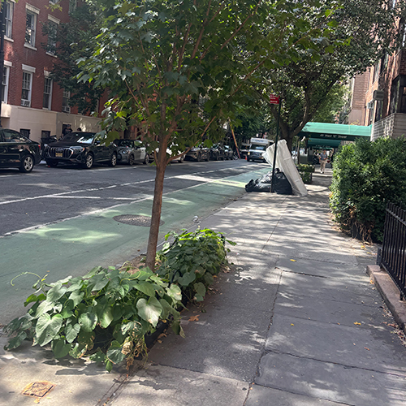
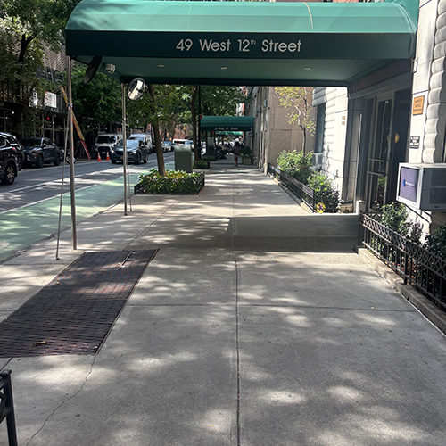
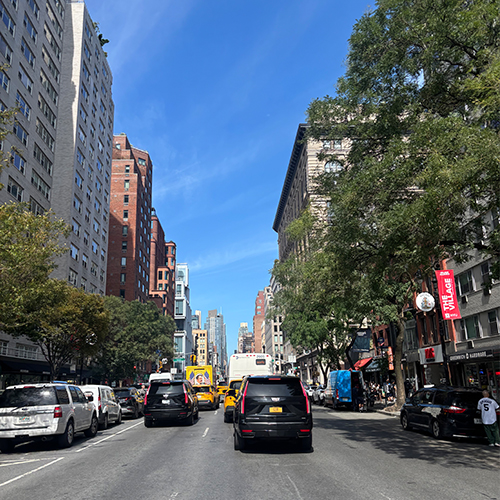
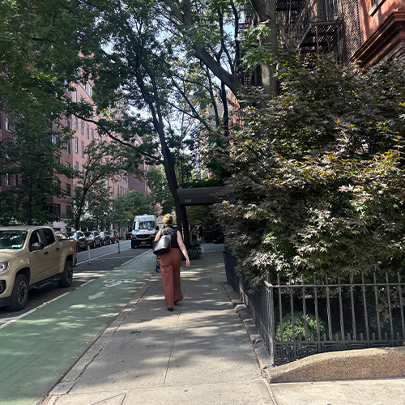
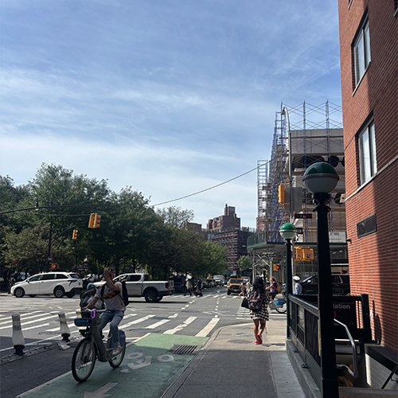
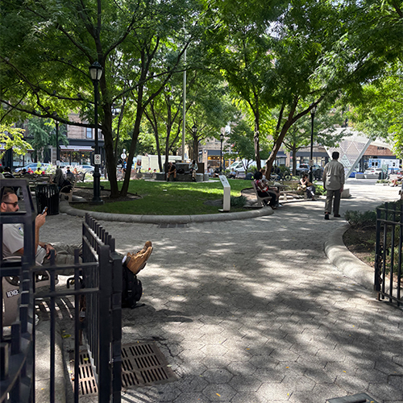

[Altitude: 10.09 m (33.1 ft) Altitude Reference: above sea level Date Stamp: Sep 8, 2026 Destination Bearing: 324.417 Destination Bearing Reference: Magnetic direction Horizontal Positioning Error: 10.935 Image Direction: 324.417 Image Direction Reference: Magnetic north Latitude: 40° 44’ 6.54” N Longitude: 73° 59’ 43.71” W Speed: 1.42 Speed Reference: Kilometers per hour Time Stamp: 18:21:43 UTC]
[Altitude: 10.04 m (32.94 ft) Altitude Reference: above sea level Date Stamp: Sep 8, 2026 Destination Bearing: 164.906 Destination Bearing Reference: Magnetic direction Horizontal Positioning Error: 14.246 Image Direction: 164.906 Image Direction Reference: Magnetic north Latitude: 40° 44’ 6.582” N Longitude: 73° 59’ 44.838” W Speed: 1.098 Speed Reference: Kilometers per hour Time Stamp: 18:22:24 UTC]

[Altitude: 9.08 m (29.79 ft) Altitude Reference: above sea level Date Stamp: Sep 8, 2026 Destination Bearing: 301.017 Destination Bearing Reference: Magnetic direction Horizontal Positioning Error: 14.246 Image Direction: 301.017 Image Direction Reference: Magnetic north Latitude: 40° 44’ 7.398” N Longitude: 73° 59’ 46.572” W Speed: 1.928 Speed Reference: Kilometers per hour Time Stamp: 18:23:09 UTC]

[Altitude: 9.47 m (31.05 ft) Altitude Reference: above sea level Date Stamp: Sep 8, 2026 Destination Bearing: 316.37 Destination Bearing Reference: Magnetic direction Horizontal Positioning Error: 14.246 Image Direction: 316.37 Image Direction Reference: Magnetic north Latitude: 40° 44’ 7.608” N Longitude: 73° 59’ 47.31” W Speed: 0.696 Speed Reference: Kilometers per hour Time Stamp: 18:23:28 UTC]
[Altitude: 8.49 m (27.85 ft) Altitude Reference: above sea level Date Stamp: Sep 8, 2026 Destination Bearing: 320.153 Destination Bearing Reference: Magnetic direction Horizontal Positioning Error: 14.246 Image Direction: 320.153 Image Direction Reference: Magnetic north Latitude: 40° 44’ 8.76” N Longitude: 73° 59’ 50.112” W Speed: 1.35 Speed Reference: Kilometers per hour Time Stamp: 18:24:34 UTC]

[Altitude: 20.23 m (66.36 ft) Altitude Reference: above sea level Date Stamp: Sep 8, 2026 Destination Bearing: 48.37 Destination Bearing Reference: Magnetic direction Horizontal Positioning Error: 13.386 Image Direction: 48.37 Image Direction Reference: Magnetic north Latitude: 40° 44’ 9.888” N Longitude: 73° 59’ 52.122” W Speed: 1.76 Speed Reference: Kilometers per hour Time Stamp: 18:25:41 UTC]

[Altitude: 21.3 m (69.88 ft) Altitude Reference: above sea level Date Stamp: Sep 8, 2026 Destination Bearing: 307.739 Destination Bearing Reference: Magnetic direction Horizontal Positioning Error: 28.345 Image Direction: 307.739 Image Direction Reference: Magnetic north Latitude: 40° 44’ 11.112” N Longitude: 73° 59’ 54.45” W Speed: 0 Speed Reference: Kilometers per hour Time Stamp: 18:26:28 UTC]
[Date Stamp: Sep 8, 2026 Destination Bearing: 11.64 Destination Bearing Reference: Magnetic direction Horizontal Positioning Error: 57.497 Image Direction: 11.64 Image Direction Reference: Magnetic north Latitude: 40° 44’ 11.73” N Longitude: 73° 59’ 56.37” W Speed: 0 Speed Reference: Kilometers per hour Time Stamp: 18:27:19 UTC]
[Date Stamp: Sep 8, 2026 Destination Bearing: 338.681 Destination Bearing Reference: Magnetic direction Horizontal Positioning Error: 50 Image Direction: 338.681 Image Direction Reference: Magnetic north Latitude: 40° 44’ 12.168” N Longitude: 73° 59’ 58.74” W Speed: 0 Speed Reference: Kilometers per hour Time Stamp: 18:27:58 UTC]

[Altitude: 2.55 m (8.36 ft) Altitude Reference: below sea level Date Stamp: Sep 8, 2026 Destination Bearing: 296.466 Destination Bearing Reference: Magnetic direction Horizontal Positioning Error: 11.736 Image Direction: 296.466 Image Direction Reference: Magnetic north Latitude: 40° 44’ 13.47” N Longitude: 74° 0’ 1.43” W Speed: 1.12 Speed Reference: Kilometers per hour Time Stamp: 18:29:09 UTC]
[Altitude: 3.21 m (10.53 ft) Altitude Reference: above sea level Date Stamp: Sep 8, 2026 Destination Bearing: 228.002 Destination Bearing Reference: Magnetic direction Horizontal Positioning Error: 21.768 Image Direction: 228.002 Image Direction Reference: Magnetic north Latitude: 40° 44’ 13.71” N Longitude: 74° 0’ 2.03” W Speed: 1.11 Speed Reference: Kilometers per hour Time Stamp: 18:29:21 UTC]

[Altitude: 10.41 m (34.14 ft) Altitude Reference: above sea level Date Stamp: Sep 8, 2026 Destination Bearing: 276.721 Destination Bearing Reference: Magnetic direction Horizontal Positioning Error: 14.246 Image Direction: 276.721 Image Direction Reference: Magnetic north Latitude: 40° 44’ 13.62” N Longitude: 74° 0’ 3.05” W Speed: 0.958 Speed Reference: Kilometers per hour Time Stamp: 18:29:51 UTC]
[Altitude: 9.47 m (31.06 ft) Altitude Reference: above sea level Date Stamp: Sep 8, 2026 Destination Bearing: 275.922 Destination Bearing Reference: Magnetic direction Horizontal Positioning Error: 14.246 Image Direction: 275.922 Image Direction Reference: Magnetic north Latitude: 40° 44’ 14.148” N Longitude: 74° 0’ 3.87” W Speed: 0.592 Speed Reference: Kilometers per hour Time Stamp: 18:30:10 UTC]
[Altitude: 9.72 m (31.9 ft) Altitude Reference: above sea level Date Stamp: Sep 8, 2026 Destination Bearing: 350.492 Destination Bearing Reference: Magnetic direction Horizontal Positioning Error: 14.246 Image Direction: 350.492 Image Direction Reference: Magnetic north Latitude: 40° 44’ 14.208” N Longitude: 74° 0’ 3.98” W Speed: 0.04 Speed Reference: Kilometers per hour Time Stamp: 18:30:23 UTC]